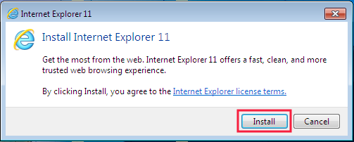
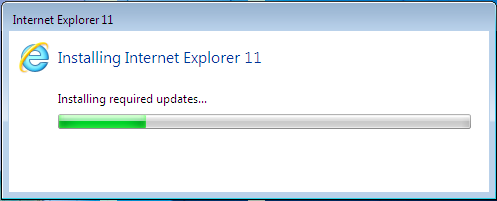
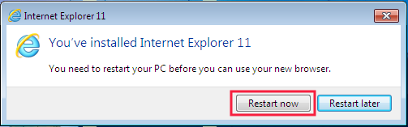
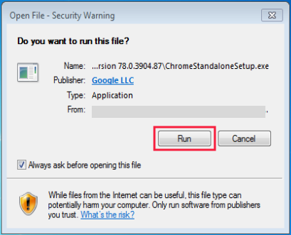
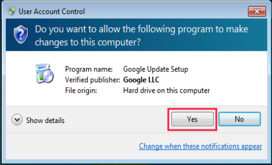
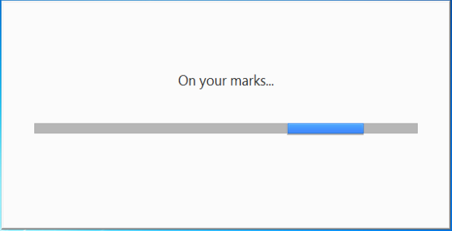
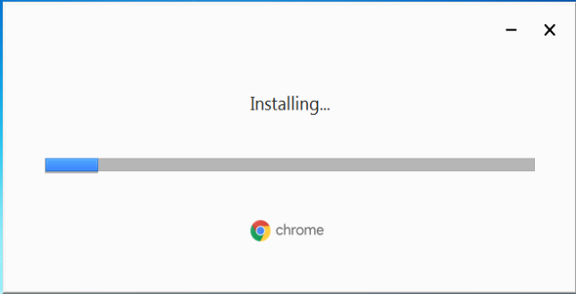
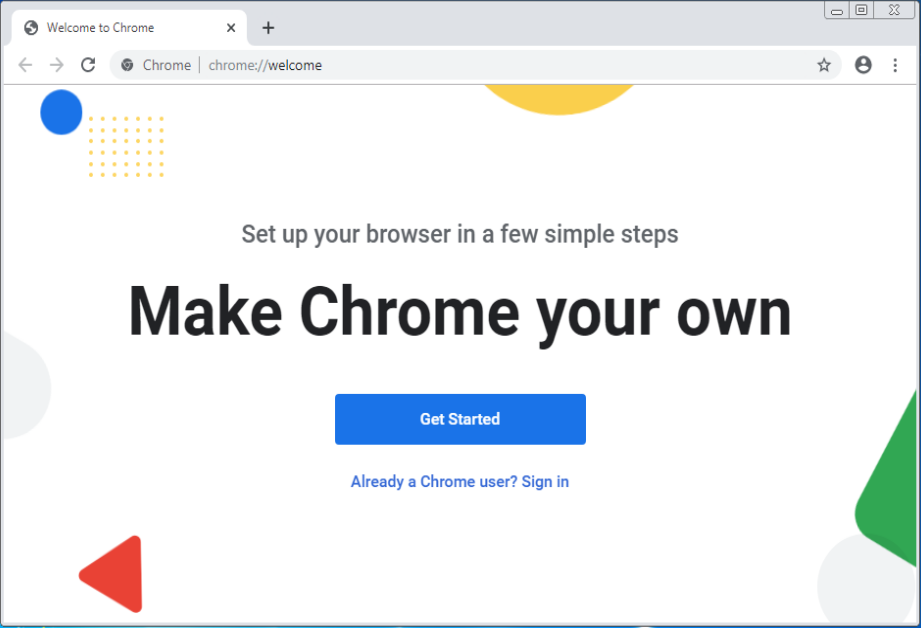
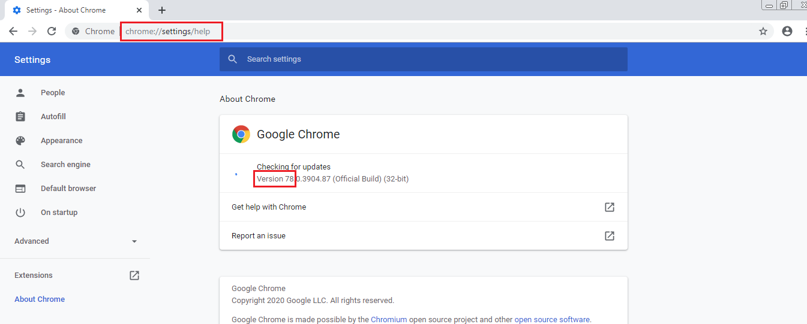

Instalasi Software Pendukung Tambahan
Instalasi Internet Explorer versi 11
Instalasi Internet Explorer versi 11 sebagai berikut:
- Download Internet Explorer versi 11 klik disini.
-
Cari file hasil download, klik 2x dan kemudian klik tombol Install.

-
Tunggu proses instalasi.

-
Instalasi selesai, klik tombol Restart now

- Setelah restart, buka Internet Explorer versi 11, tekan Alt + X pada keyboard, lalu pilih Internet Options.
-
- Untuk pengguna Windows 7 -> klik tab Programs, klik tombol Make Default -> klik tombol OK dan kemudian tutup Internet Explorer.
- Untuk pengguna Windows 10 -> Klik tab Programs -> klik Make Internet Explorer the default browser -> pada panel Programs (sebelah kiri) cari dan pilih Internet Explorer -> klik Set this program as default -> klik tombol OK -> klik tombol OK lagi dan kemudian tutup Internet Explorer.
- Selesai.
Catatan: Apabila Anda menggunakan Windows 7 pastikan telah Windows 7 SP 1 sebelum menginstall Internet Explorer versi 11; jikalau belum, download dan install Service Pack 1 (SP 1) terlebih dahulu klik disini.
Instalasi Google Chrome
Instalasi Google Chrome sebagai berikut:
- Download Google Chrome, klik disini.
-
Cari file hasil download, klik 2x, apabila muncul jendela seperti di bawah ini klik tombol Run.

-
Apabila muncul jendela seperti di bawah ini klik tombol Yes.

-
Tunggu proses persiapan instalasi.

-
Tunggu proses instalasi.


- Masuk Local Disk (C): -> Program Files atau Program Files (x86) -> Google -> Update -> pada file GoogleUpdate ganti namanya menjadi GoogleUpdateNoUpdate.
- Selesai.
Instalasi Chrome Driver
Instalasi Chrome Driver sebagai berikut:
-
Buka Google Chrome, pada search bar ketik: chrome://settings/help lalu tekan
Enter di keyboard dan catat versi Google Chrome.

- Download Chrome Driver yang versinya sama dengan Google Chrome, klik disini. Misal Google Chrome-nya v78, maka download Chrome Driver v78.
- Cari file hasil download, extract dan kemudian copy serta paste file hasil extract di folder OtomaX lihat disini atau folder lokasi instalasi OtomaX Anda.
- Selesai.
Instalasi Selenium WebDriver
Instalasi Selenium WebDriver sebagai berikut:
- Download Selenium WebDriver, klik disini.
- Cari file hasil download, extract dan kemudian copy serta paste file hasil extract di folder OtomaX lihat disini atau folder lokasi instalasi OtomaX Anda.
- Selesai.
Instalasi WebView2 Libraries
Instalasi WebView2 Libraries sebagai berikut:
- Download WebView2 Libraries, klik disini.
- Cari file hasil download, extract dan kemudian copy serta paste file hasil extract di folder OtomaX lihat disini atau folder lokasi instalasi OtomaX Anda.
- Selesai.